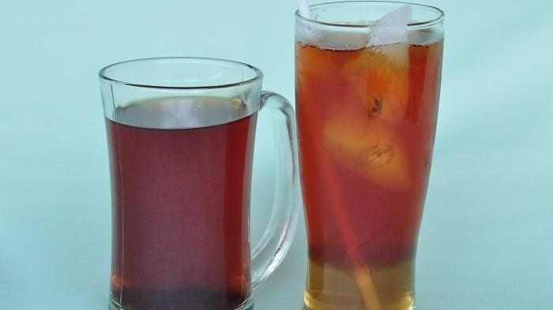
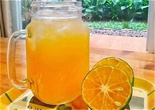
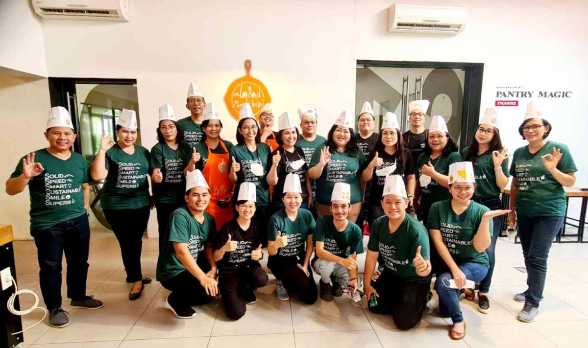

GALERI
KEDAI RUNCIT
Selamat datang di galeri Kedai Runcit! Di sini Anda dapat melihat berbagai menu makanan, minuman, menu andalan, dan kegiatan tim kami. Anda dapat mendengarkan suasana kedai kami. Nikmati pengalaman visual yang menggugah selera!
Dengarkan suasana kedai kami.


Menu Andalan Kami
Beberapa menu yang menjadi pilihan favorit pelanggan Kedai Runcit.

Bakso Urat dengan kuah gurih dan pelengkap yang lezat.

Mie ayam topping ayam dan bakso dengan kuah yang gurih.

Soto hangat dengan kuah tauto gurih yang cocok dinikmati kapan saja.
Galeri Makanan
Berbagai makanan yang tersedia di Kedai Runcit.


Galeri Minuman
Pilihan minuman yang dapat dinikmati bersama makanan.


Tim Kami

Terimakasih telah mengunjungi galeri kami! Kami berharap Anda menikmati pengalaman visual dan suasana Kedai Runcit. Jangan ragu untuk mengunjungi kami dan mencoba menu andalan kami secara langsung. Sampai jumpa di Kedai Runcit!